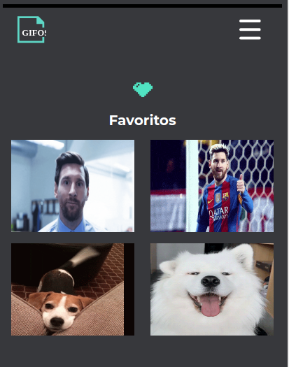
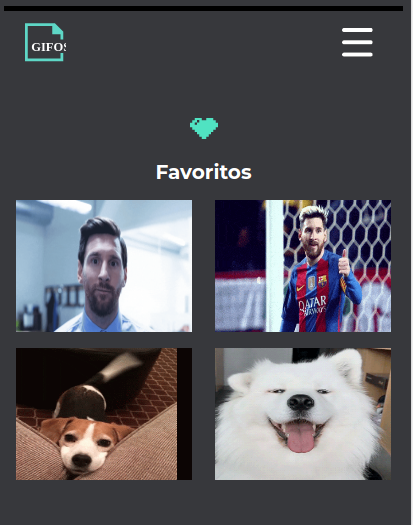

POKEDEX
Pagina estatica, Vanilla JS con peticion a PokeAPI.
Web developer. Actualmente desarrollando trabajos como freelancer.
HTML , CSS3 avanzado, SASS, Javascript, desarrollo en Node.js, manejo de mongoDb, MySQL, ReactJs., AngularJs., AWS
Nivel de ingles : Avanzado
Pagina estatica, Vanilla JS con peticion a PokeAPI.
API dirigida a un restaurante de comidas,desarrollado en NodeJs. Leer mas... acceso con token , CRUD de productos, pedidos y personas. Base de datos MySQL, usando como ORM: Sequelize ...Cerrar
React y nodeJS.
User : Prueba
Password : prueba123
 


Pagina responsive con peticiones a API y grabacion de video.


Maquetacion de pagina estatica responsive Html, CSS3 , SASS.